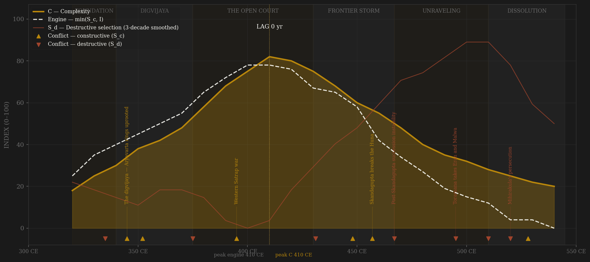
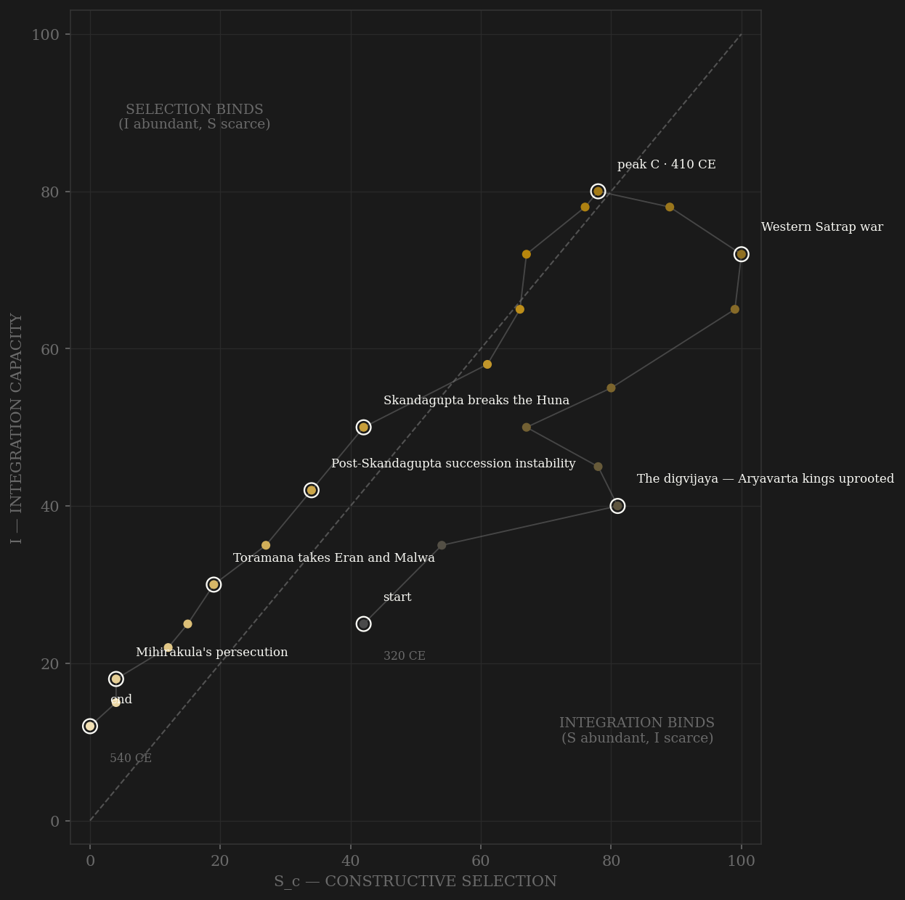

Gupta is the sample's test of whether contestability can be read from stone. The elite-entry channel here is not an examination register but a patronage market: agrahara land grants minting a new administrative elite, guilds sealing documents at Vaishali and banking temple endowments as perpetual trustees, and a court — the Navaratna tradition, Kalidasa's generation — where Sanskrit letters and state office were one ladder, Harishena serving as both praise-poet and minister of war and peace. The composite engine crests around 400–410, precisely where Fa Xian describes a governed, mobile, lightly-taxed society, and complexity crests on top of it — the two peaks land on the same decade, a SIMULTANEOUS verdict, the only one in the sample beside Achaemenid. The external-war definition tells a slightly different story: coded on rivalry alone, the engine peaks in the 380s–90s with the Western Satrap war and gives +30, a pass. Both are reported; the flip is the finding. The decline is symmetrical and legible: grants harden hereditary, governorships lengthen in families, the war finance of the Huna defense thins the silver coinage — and after Skandagupta dies in 467 the succession never again resolves cleanly. Toramana's boar inscription at Eran, dating the empire's heartland by a Huna's reign, marks the moment the red line crosses everything else. What survives — Aryabhata, Varahamihira at Ujjain — survives at successor courts: the memory term outliving the machine.

No trajectory in the sample hugs the diagonal like Gupta. It enters mid-right — a conquest house with more contest than coordination — and climbs the S=I line almost exactly: the tributary system multiplying administrative posts at the same rate the digvijaya multiplies rivals, the patronage market and the revenue base growing in step. It crosses the diagonal at the very top, around 400, and the apex decades sit within a few points of perfect balance — selection binding by the thinnest margin at peak complexity. Then it turns and walks back down the same line. Where Ming whipsawed across the diagonal and Rome died pinned to one wall, Gupta's selection and integration rise together and fail together — the hereditary drift freezing the ladder at the same pace the Huna wars drain the treasury that funded it. The ending is a long diagonal slide into the origin: by the 520s the dynasty is a Magadha local line watching a successor state win its war at Sondani, and the path expires at the bottom-left corner with nothing left on either axis. The symmetry is the diagnostic — this is what decline looks like when no single constraint binds first.
Coded by locus and target, never by outcome — and the Gupta ledger is the rule's cleanest demonstration, because the same enemy flips code as the locus moves. The Huna under Skandagupta are S_c: the Bhitari inscription records the crown prince holding the frontier, and the Junagadh inscription shows the machinery still functioned under maximum pressure — the Sudarshana dam rebuilt mid-war, provincial administration audibly working. The Huna after 495 are S_d: Toramana's Eran boar dates Malwa by his reign, Bhanugupta's 'great and famous battle' of 510 is fought inside the old core, and Mihirakula's persecution wrecks the monastic infrastructure the endowment system ran on. Same invader, opposite codes, because the locus crossed from frontier to heartland — the Adrianople rule applied decade by decade. Succession runs the same test in miniature: Kacha's rival coinage and the Ramagupta palace affair are contests settled inside the house with the machinery intact, and score as within-rules competition with only a destructive residue; the post-467 instability — rival lines, rapid successions, provinces dating by the era while ruling alone — is S_d proper, the apex contest breaking the thing it contested for.
| YEAR | CONFLICT | CODE | CODING RATIONALE |
|---|---|---|---|
| 335 CE | Kacha's contested succession | Sd | A rival's coinage at the apex — contest for the throne itself, resolved quickly with the machinery intact; destructive residue only |
| 345 CE | The digvijaya — Aryavarta kings uprooted | Sc | Samudragupta's conquest of the directions (Allahabad prasasti): nine kings destroyed, twelve reinstated as tributaries — external contest that builds the machine |
| 352 CE | Dakshinapatha campaign | Sc | Southern kings defeated and deliberately restored — rivalry converted to tribute; the frontier disciplines without annexation |
| 375 CE | The Ramagupta affair | Sd | Fratricide at the apex (the Devichandraguptam tradition) — but settled inside the palace, machinery untouched; a bounded S_d pulse |
| 395 CE | Western Satrap war | Sc | Rudrasimha III destroyed, Malwa and Saurashtra taken — the dynasty's great peer contest, and the peak of the v1 external-war series |
| 431 CE | Pushyamitra revolt | Sd | A vassal rising the Bhitari inscription says 'shook the family's fortunes' — internal locus, aimed at the tributary machinery |
| 448 CE | First Huna clash on the frontier | Sc | The crown prince holds the line (Bhitari) — external pressure answered at the border, core untouched |
| 457 CE | Skandagupta breaks the Huna | Sc | The Hannibal rule at full stretch: maximum external pressure while the Junagadh inscription shows the Sudarshana dam rebuilt mid-war — the machinery demonstrably functioning |
| 467 CE | Post-Skandagupta succession instability | Sd | No able heir; the Purugupta line returns; rapid successions and provincial breakaway — the apex contest now damaging the machinery it contests |
| 495 CE | Toramana takes Eran and Malwa | Sd | The boar inscription dates the heartland by a Huna's reign — external origin, core-penetrating locus: the Adrianople rule |
| 510 CE | Bhanugupta's battle at Eran | Sd | 'A great and famous battle' inside the old core — Goparaja's sati stone survives; resistance fought on the empire's own floor is core violence by locus |
| 520 CE | Mihirakula's persecution | Sd | Monasteries wrecked, the endowment infrastructure the administrative system ran on destroyed (Xuanzang's testimony) — violence aimed squarely at coordination capacity |
| 528 CE | Sondani — Yashodharman breaks Mihirakula | Sc | The victory that clears the Huna from the plains — won by a successor state, the dynasty a bystander at its own war; coded external contest, credited to no Gupta machinery |
| COMPONENT | GRADE | BASIS |
|---|---|---|
| S_c A — Elite-entry (0.40) | ○ scholar-coded | Patronage-market openness ordinal: agrahara grant elite formation, guild/shreni autonomy (Vaishali seals, Indore plate), Sanskrit-cosmopolis court competition (Navaratna), appointed vs hereditary governorships. Coded per decade from Thapar, Goyal, Majumdar (Classical Age); hereditary-drift decay per R.S. Sharma's samanta thesis |
| S_c B — External rivalry (0.30 cap) | ○ scholar-coded | Digvijaya, Western Satrap war ~395, Huna frontier defense to 467 — coded from the Allahabad, Bhitari, and Junagadh inscriptions. This channel alone = the frozen Sc_v1_combat column |
| S_c C — Internal within-rules (0.30) | ○ scholar-coded | Court and succession contests resolved without machinery damage: Kacha's coinage, the Ramagupta affair, sectarian patronage competition fought with grants; vada debate culture at the apex |
| S_d — Destructive | ○ scholar-coded | Locus-and-target ledger: Pushyamitra revolt, post-467 succession instability, Huna core penetration after 495 (Eran inscriptions, Gwalior). Per-decade rationale in coding_ledger.csv |
| I — Integration | ○ scholar-coded | Inherited composite column (tributary network, trade reach, Fa Xian's governance testimony) — preserved untouched from the original build |
| C — Complexity | ○ scholar-coded | Inherited column: literary/scientific output, coinage quality, monumental work — no measured GDP series exists for the period; honest floor of the evidence ladder |
| E — Entropy / R — Population | ○ scholar-coded | Inherited columns; R is subcontinent population in millions (McEvedy). Coinage debasement (Altekar) informs the coded fiscal-strain decades |
23 decade rows (320–540). Sc/Sd decomposition built STRAIGHT to definition v2 (contestability composite, 0.40 elite-entry / 0.30 external hard cap / 0.30 internal within-rules) by scripts/build_gupta_sicre.py, 2026-07-06; per-decade channel scores and rationales in data/raw/gupta/coding_ledger.csv; all pre-existing columns preserved. BOTH DEFINITIONS REPORTED per the v2 amendment, and here they diverge: v2 contestability lag +0 (engine 410 = C 410, SIMULTANEOUS; smoothed C exactly ties 410/420 — taking the later decade still reads SIMULTANEOUS); v1 external-war-only lag +30 (engine 380 → C 410, PASS). The flip is shown, not hidden: war-coded selection leads complexity, contestability-coded selection moves with it — on a 23-row scholar-coded grid the difference is one to three decades and should not be over-read. Frozen protocol throughout: 3-decade centered rolling mean, engine = min(S_c, I). Chronology caveat: the inherited I/C/E columns embed a slightly early Huna chronology (Mihirakula appears at 480 in the original notes); the ledger codes mainstream dating (Toramana in Malwa ~495–510, Mihirakula ~515–530). Rebuild: build_gupta_sicre.py, then polity_report.py --slug gupta.